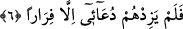
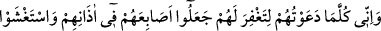
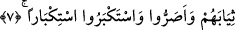

zaman tümüyle bunların içindedir.
Keşfü’l-esrâr’da şöyle denir: “Geceleri onların evlerinde, gündüzleri onların
meclislerinde…”
Nûh (a.s.) geceleyin tek tek her birinin kapısına gelir ve kapıyı çalardı. Ev sâhibi
içerden “kim o” diye sorar, Nûh (a.s.) da “Ben Nûh’um. «La ilâhe illallah» de!”
buyururdu.
6. Fakat benim dâvetim, ancak kaçmalarını arttırdı.
et-Tevilatü’n-necmiyye’de şöyle denir: Fakat benim dâvetim ancak onların bana,
dînime ve üzerinde bulunduğum yola uymaktan kaçmalarını arttırdı.
“Firâr etmek, kaçmak” kelimesi, “lem yezidhum” fiilinin ikinci mef’ûlüdür çünkü
bu fiil iki mef’ûl alır. Meselâ Arapça’da “zâdehullahu hayran” denilir.
“Artırma” fiili, “dâvet” kelimesine isnâd edilmektedir. Hâlbuki arttırma aslında Allah
Teâlâ’nın fiilidir. Buna rağmen “dâvet”e isnâd edilmesi, arttırmaya dâvetin sebep
olmasından dolayıdır. Buna göre âyet-i kerîmenin mânâsı; Allah dâvet esnâsında dâvet
edilen kişinin tercîhini dâvet edilen konudan çevirmek sûretiyle onların kaçışlarını
arttırmıştır.
7. Gerçekten de, (îmâna gelmeleri ve böylece) günahlarını bağışlaman için onları
ne zaman dâvet ettiysem, parmaklarını kulaklarına tıkadılar, (beni görmemek için)
elbiselerine büründüler, ayak dirediler, kibirlendikçe kibirlendiler.
et-Te’vîlatü’n-necmiyye’de şöyle denir: Ben onları emredilenin meydana gelmesi
sonucunu doğuran irâde olmaksızın ne zaman dâvet ettiysem parmaklarını kulaklarına
tıkadılar. Emir irâdeden soyut olunca emredilenin meydana gelmesi zorunlu olmaz.
Hâlbuki irâde ile birlikte olan emir böyle değildir. Çünkü o takdirde emredilenin vuku
bulması kaçınılmaz olur.
“Parmaklarını kulaklarının üzerine koydular” yâni dâveti duymamak için
kulaklarını kapattılar. “Parmakları kulakların üzerine koymak” ifâdesi, hâdisenin kinâye
yolu ile anlatımıdır ancak hakîkî mânâya alınmasına da herhangi bir mâni yoktur. Yâni
dâveti duymamak için parmaklarını kulak deliklerine sokmuşlardır.
“Elbiselerine büründüler”, elbiselerini başlarına çektiler. Büründüler şeklinde